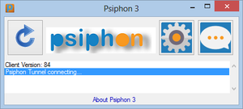

Psiphon
Psiphon is a circumvention system that uses a combination of secure communication and obfuscation technologies (VPN, SSH, and HTTP Proxy). The Psiphon codebase is developed and maintained by Psiphon Inc which operates systems and technologies designed to assist Internet users to securely bypass the content-filtering systems used by governments to impose censorship of the Internet. Psiphon is specifically designed to support users in countries considered to be "enemies of the Internet".[1] The original concept for Psiphon (1.0) was developed by the Citizen Lab at the University of Toronto, building upon previous generations of web proxy software systems, such as the "SafeWeb"[2] and "Anonymizer" systems. In 2007 Psiphon Inc was established as an independent Ontario corporation that develops advanced censorship circumvention systems and technologies. Psiphon Inc and the Citizen Lab at the Munk School of Global Affairs, University of Toronto occasionally collaborate on research projects, through the Psi-Lab partnership.[3]